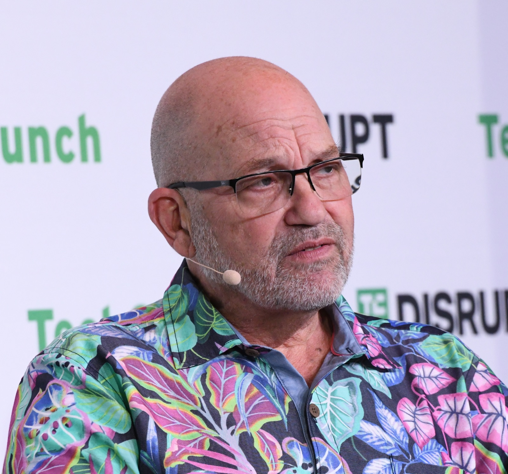
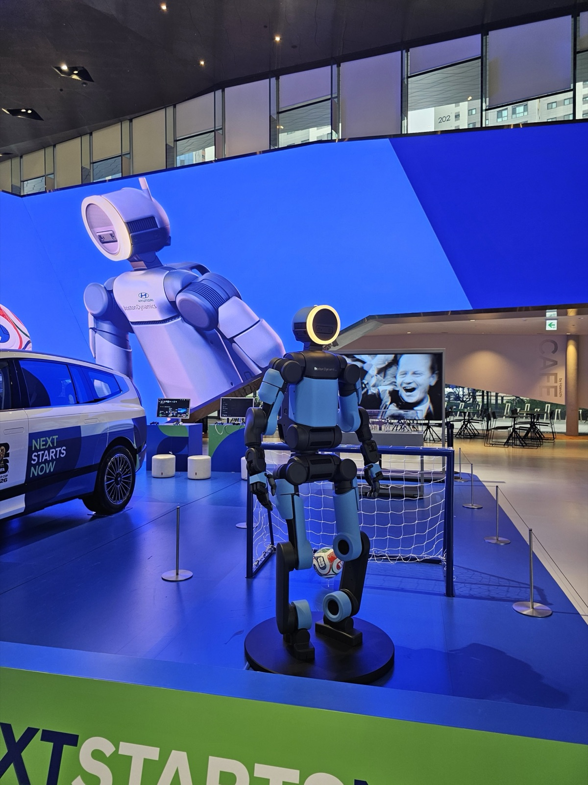

Executive Summary
Hyundai Motor Group has agreed to hand SoftBank Group its stake in the RAI Institute, the robotics and AI research organization it set up in Cambridge, Massachusetts. The Robot Report broke the story on 18 September citing multiple sources, and neither company has confirmed a price. The deal is now before the Committee on Foreign Investment in the United States. Selling one robot bound for a production line is a different act from selling the entire organization that taught that robot, so the review is looking somewhere other than the hardware. This article follows what actually crosses the border here.
More than $400 million went in at the founding, and it has already been spent. What SoftBank receives, then, is not leftover cash but what four years of that money built: researchers, code, and training records. RAI is where the whole-body control framework behind the acrobatics of Boston Dynamics' new Atlas came from. Which data travels with the company, and on what terms, has not been disclosed, and neither has the stage the review has reached.
Sections 1 through 3 report what news coverage and public filings establish. The EU Data Act provisions and the industry practice in Section 4 are public facts as well, but reading them alongside this deal, together with all of Section 5, is this article's own interpretation.
Key Figures
Source: The Robot Report (2026-09-18), Dealroom, SoftBank Group press release (2025-10-08).
47.5%
RAI stake going to SoftBank
The slice Hyundai Motor Group booked as an asset held for sale in its first-half 2026 financial report
$400M+
Put in at the founding
Already spent. What remains is the researchers and the training records
9.65%
The stake moving the other way
Hyundai Motor Group is exercising a put option to buy out the Boston Dynamics shares SoftBank held
$5.38B
SoftBank's ABB Robotics purchase
Agreed in October 2025 on an enterprise value basis, bolting industrial robot hardware onto the same stack
A Research Lab Changes Owners
The RAI Institute is a research organization Hyundai Motor Group set up separately in 2022 while it was taking Boston Dynamics in. Marc Raibert founded it. He started Boston Dynamics in 1992 and stepped down as its CEO in January 2020, then built an organization that does research only, apart from the work of making products. Hyundai Motor Group put more than $400 million in as founding investment. That money has already been spent, The Robot Report said.

No formal announcement has come. RAI said it had nothing to share at present and SoftBank did not respond. The accounting left a mark instead. In its first-half 2026 financial report Hyundai Motor Group classified its 47.5 percent RAI stake as an asset held for sale. The selling side has already drawn that line in its own books. Neither party has disclosed the price, and the estimates circulating on some Korean channels carry no primary source.
The part worth watching is that two stakes move in opposite directions at the same time. SoftBank owned Boston Dynamics from 2017 to 2021 and held 9.65 percent of it afterward. In July 2026 Hyundai Motor Group exercised a put option on those remaining shares and began buying them out in full. The company that builds robots is gathering on the Hyundai side, and the lab that taught them is heading toward SoftBank.
The reason Hyundai Motor Group gave is that it wants to respond to the physical AI market with Boston Dynamics at the center. It added that it will keep pushing robotics development and commercialization to build competitiveness. At CES 2026 it showed a production model of Atlas along with a plan to put it on factory floors, and from 2028 it intends to bring Atlas into Metaplant America in Georgia for work such as parts sequencing before widening the processes it covers. It reads as a company setting research down and narrowing its role toward field validation and turning that into assets.
The picture on the receiving side runs the other way. In October 2025 SoftBank agreed to acquire ABB's industrial robotics division at an enterprise value of $5.38 billion, an organization of more than 7,000 employees with 2024 revenue of $2.3 billion. ABB had planned to spin the business off and list it separately, then turned toward an outright sale once the offer came in. Masayoshi Son said at the time that physical AI is SoftBank's next frontier. Industrial hardware is being laid on top of holdings that already include SoftBank Robotics, Berkshire Grey, AutoStore, Agile Robots and Skild AI, and now a research organization is being added to that.
Where Did Atlas Learn Its Acrobatics?
RAI works across robot control and perception, manipulation, navigation, and AI. The result best known outside the building is the whole-body control learning framework for Boston Dynamics' new Atlas. Whole-body control means moving all the joints of the body in coordination rather than driving the arms and the legs separately. For a backflip to be possible the force and angle of dozens of joints have to line up at the same instant, and this framework has that combination found by learning instead of written out by hand.

That makes it clear what is changing places in this deal. Atlas, the finished product, stays with Boston Dynamics, and that company is if anything being tied more tightly to Hyundai Motor Group. What goes to SoftBank is the side that taught the robot how to move: the researchers, the training code, and the records used to run that code.
A learning framework on its own is an empty vessel. For a robot to use its body the way a person does, someone has to drive the robot by hand and leave a record of it. This is called demonstration data, or teleoperation data in the trade. Which joints moved, in what order and how far, what the cameras took in at that moment, and when each moment happened all pile up as one bundle. How much a robot can do depends heavily on how thick that record is.
What demonstration records RAI holds, how many of them there are, and which ones travel to SoftBank has not been disclosed. Nor can anyone outside tell what the contract says. In a deal where a stake transfers whole, the data a company holds follows the company by default. Keeping it from doing so takes a separate line in writing.
What carries a price in physical AI is shifting. It is not one robot but the ability to teach robots, and that ability exists as a bundle of people, code, and records. The bundle is not bolted to a factory floor, so it crosses a border on the strength of a share purchase agreement.
The Security Review's Real Subject: Data Access
The Committee on Foreign Investment in the United States is chaired by the Treasury Department and draws in several other agencies. When foreign capital buys an American company, it weighs how the deal bears on national security and then clears it, attaches conditions to it, or blocks it. This deal is in that review. What stage it has reached is not public, and clearance is not assured.

The review runs on a clock written into law. Once a notice is accepted, the first review has to finish within 45 days, and if the risk is not resolved there it moves into a 45-day formal investigation. Only in extraordinary cases does the Treasury grant another 15 days for that investigation. If the committee cannot reach a conclusion of its own and refers the matter to the President, a decision follows within another 15 days.
This clock gets wound back often, though. Of the 209 formal notices accepted in 2024, 49 were withdrawn partway, and every withdrawal came after the formal investigation had begun. Of those, 42 were filed again. Parties withdraw to buy time to study the mitigation terms the committee has put in front of them, then file again, and the 45 days run from the start each time. In the same year 116 notices went past the first review into a formal investigation, which is more than half of them. So a calendar alone is a poor way to count toward an ending.
Two of the tests that decide what falls under review touch this case. One is critical technology and the other is sensitive personal data. Rule changes over the past few years wrote robotics and advanced manufacturing in as high-risk sectors. That is why exporting a finished robot and transferring the shares of the organization that built it do not sit on the same scale. The first sends one object out; the second sends out the whole capacity to build that object again.
Deals involving technology usable on both the military and the civilian side often draw conditions rather than a plain clearance. Information separation shows up frequently in earlier cases. It has the people who handle AI models and training data kept apart from the people who handle sensitive systems, across three layers: organization, IT, and audit. Another condition seen before requires the company to set up a security committee inside itself, with a security officer the government has approved.
That is not to say such strings are common. The Treasury reports each year's tally to Congress in an annual report. The figures there show that in 2024, 25 notices drew mitigation measures or conditions, a little over 12 percent of the total. Sixteen of them concluded with a mitigation agreement in place. But once one is in place it stays a long time. At the end of that year the committee was monitoring compliance with 242 agreements and conditions. In the same year the agencies assigned to that monitoring made 79 site visits, and the committee imposed penalties four times for breaches of material provisions. A condition means that after the deal closes, a door into the company opens on a regular schedule.
What these conditions say is where the review's attention lies. They are designed on the premise that even after a stake changes hands, who can reach the data and the models can be locked separately. Whether anything will actually be attached to this deal, or whether anything is attached at all, cannot be known yet. What is clear is that when an organization holding both the framework and the records crosses a border, what the regulators look at first is not how well the robot performs but who has access to the data.
Who Owns the Data Your Factory Robot Makes?
The same question has already reached ordinary manufacturing sites on a much smaller scale. The day a robot arm comes into a factory and an autonomous transport vehicle starts moving, records begin to accumulate. How the operator took hold of the robot and taught it, the situations in which it stopped, the processes where it failed, all of that stays behind. Ask who owns those records and the answers usually split two ways: ours, because they came out of our factory, and the robot maker's, because the robot produced them.

In Europe the default answer to that question changed a moment ago. The EU Data Act entered into force in January 2024 and has applied since 12 September 2025, and the obligation within it to make data accessible by design took effect on 12 September 2026. As this is written, that provision is a little over two weeks old. It breaks with the long practice that data made by a machine belongs to whoever made the machine, and gives the user of a connected product the right to reach the data that product generates and to share it with others. Industrial robots sit inside that scope.
It does not move ownership wholesale. Instead it creates two positions, the data holder and the user, and stops the holder from freely using data out of the user's machine, or passing it to anyone else, without a contract. In practice, then, the nature of the question changes. Reading the law no longer tells you whose the data is; what decides that is what the two sides write into the contract.
Opening the text makes this plainer. Article 4(13) says a data holder may use readily available non-personal data only on the basis of a contract with the user. Article 4(14), immediately after, bars it from making non-personal product data available to a third party for any purpose other than performing that contract. Both provisions nail the word contract into the regulation itself. Rather than settling the answer, the law designates the place where the answer is to be written.
The timing is easy to misread. The obligation to make access available by design sits in Article 3(1), and it binds only connected products placed on the market after 12 September 2026. It does not reach back to equipment already installed and running. For that equipment, Article 4(1), which requires data to be made available on the user's request, remains the route. One more thing: the regulation does not ask where the manufacturer sits. It applies to anyone placing a product on the EU market, so a Korean company supplying equipment into Europe is not outside it.
A run of similar deadlines is stacked close together as well.
- • 2 August 2026 — transparency obligations under the EU AI Act
- • 11 September 2026 — reporting obligations under the Cyber Resilience Act
- • 12 September 2026 — the access obligation under the Data Act
- • 9 December 2026 — deadline to transpose the revised Product Liability Directive
- • 20 January 2027 — the Machinery Regulation takes effect
On the market side, meanwhile, demonstration material has itself become a scarce good. Nvidia reckons that all the teleoperation data secured across robotics as a whole amounts to a few hundred thousand hours at most. Set against what language models scooped off the internet, that is close to nothing. So due diligence guidance circulating in the industry says a data vendor has to be asked, asset by asset, what right each asset came from, and some companies keep their own demonstration crews inside manufacturing partnerships precisely to avoid entanglement with third parties. Figure AI with BMW, and Tesla's Optimus, run in that direction.
At the place where contracts actually get written, the phrase episode contract comes up. It works by pinning down what counts as a single demonstration run in the first place. What the task was, what the starting state was, what separates success from failure, how a failure gets reset, and what signals are recorded in that run. This notation has not hardened into an industry standard, though. Korea's Ministry of Science and ICT has recognized that robot teleoperation data comes in a different format at every company, which makes it hard to use, and is working on standardization and on building a library. So the standard comes later while contract practice stands in front.
Why Pebblous Is Watching This Deal
From here the deal gets read again through the lens of data quality.
The sentence that $400 million has all been spent tells us the most about this deal. If there is a buyer even though no money is left, then what carries a price is not the balance but what the money left behind on its way through. What is in the researchers' heads, the training code piled up in the repository, and the records made by moving robots with human hands. Of those three, the first two lose value when people leave or code ages. Making the last one again means people taking hold of robots and spending all that time over again.
That is why a security review attaches. The regulators are not interested in stopping a stake from transferring; they are trying to set who can reach those records once it has. Information separation as a condition does not physically seize data; it divides access rights on paper. In the end the fate of the data in this deal too is settled to the extent that it is written down.
Shrink the scale and the same structure turns up in any plant. Somewhere in a robot purchase agreement, in the maintenance contract with a systems integrator, in a pilot project agreement, there is a data clause or there is not. Where there is not, a default settles, and that default usually hardens in favor of whoever is actually holding the records. Pebblous has pointed at the same place before, in the custody problem at small and midsize manufacturing sites, in the way a price is attaching to companies that collect demonstration data, and in the strategy of drawing data straight up from the factory floor.
Open the contract again and there are five places to check.
- • Who is named as the holder of the records that come out of our site. If nobody is named, that line is empty
- • Whether that data can be moved to an overseas server or to a head office. If it can, in what form and how far
- • Whether the supplier may use this data to train its own models. If it may, whether it can resell or relicense it to other customers
- • Whether the clause survives when the supplier's ownership changes or its division is sold
- • In what format the accumulated material is returned or erased when the contract ends
None of the five is a technique for raising the value of data. They are all a matter of writing down where the data sits and where it is allowed to go. Most of the preparation for adopting physical AI leans toward models and sensors and processes, while what is actually left in hand a few years later is those few lines. One lab in Cambridge changing owners and one robot arm in your factory leaving records behind differ in scale and are tied to the same sentence.
Thank you for reading this far. The reporting this article follows can be read in full at The Robot Report and Dealroom. We would be glad to hear what sentence you have put into a contract about the records your robots make on site, or where you ran aground while trying to.
References
Original Reporting
- 1.The Robot Report (2026). "SoftBank agrees to acquire Robotics and AI Institute." 2026-09-18.
- 2.Dealroom (2026). "SoftBank to acquire Robotics and AI Institute, deal under US review." Dealroom News.
Korean Follow-up Coverage
- 3.Robot Newspaper (2026). "SoftBank Agrees to Acquire RAI Institute with Hyundai Motor Group." (in Korean)
- 4.TheGuru (2026). "Hyundai, SoftBank Agree to Sell Boston Dynamics Research Arm 'RAI', US CFIUS Review Begins." (in Korean)
Official Documents
- 5.SoftBank Group Corp. (2025). "Acquisition of ABB Ltd's Robotics Business." 2025-10-08.
- 6.U.S. Department of the Treasury (2025). "CFIUS Annual Report to Congress, Calendar Year 2024."
- 7.European Parliament and Council of the European Union (2023). "Regulation (EU) 2023/2854 (Data Act)." Official Journal of the European Union, 2023-12-13.
Background Explainers
- 8.European Commission. "Data Act explained." European Commission — Digital Strategy.
- 9.GovFacts. "How CFIUS Reviews Dual-Use Technology Mergers for National Security."